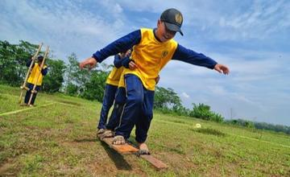
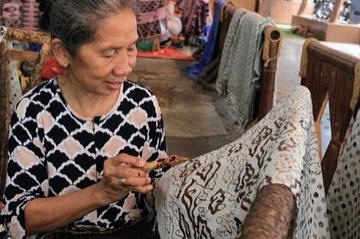
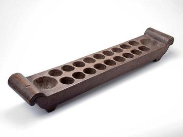
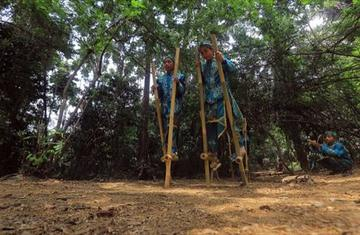
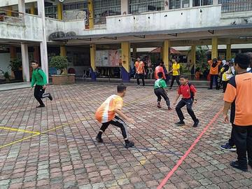

Home / Crossroads and Golden Ages / Southeast Asia and the Islands
Encyclopedia ID 910
Malay draughts
Also known as Dam · Dam Haji · Dam aji · Dam ular
Two-player draughts-type game on a marked board, often played in coffee shops.
Heritage note
Part of the living heritage of Malaysia.
Origins
Usually placed in the era of Crossroads and Golden Ages (about 500 to 1500), although its exact origins are uncertain, within the cultural world of Southeast Asia and the Islands.
Sources
Related entries
Thai checkers
Thailand · Board and table games


More from Malaysia


Batik wax-resist pattern studio
Indonesia +1 · Crafts and makingPlay preview · in the Textile Crafts of the World app

Dikir barat
Malaysia · Street and playground games

Galah panjang
Malaysia +1 · Street and playground games